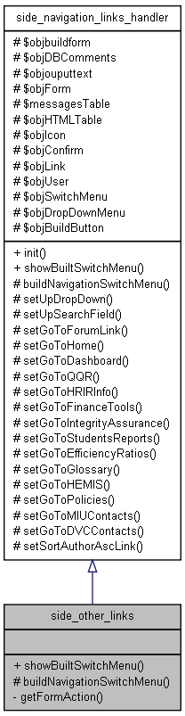
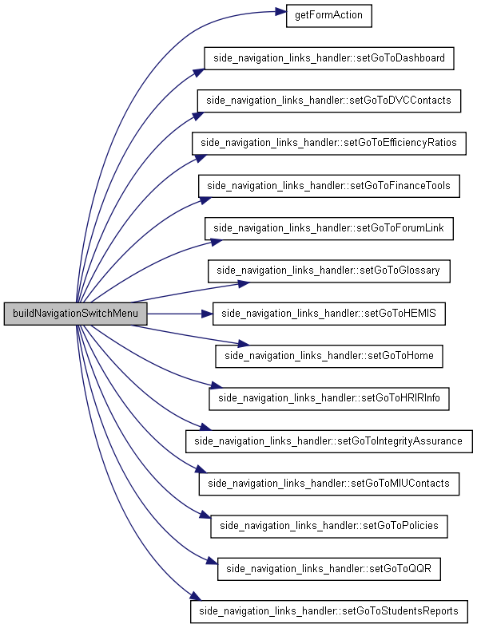
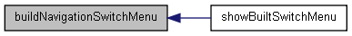
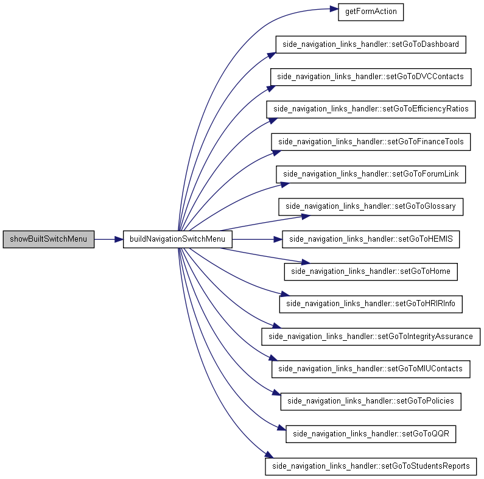

side_other_links Class Reference
Inheritance diagram for side_other_links:

Collaboration diagram for side_other_links:

Public Member Functions | |
| showBuiltSwitchMenu () | |
Protected Member Functions | |
| buildNavigationSwitchMenu () | |
Private Member Functions | |
| getFormAction () | |
Detailed Description
Definition at line 4 of file side_other_links_class_inc.php.
Member Function Documentation
| buildNavigationSwitchMenu | ( | ) | [protected] |
Reimplemented from side_navigation_links_handler.
Definition at line 23 of file side_other_links_class_inc.php.
Here is the call graph for this function:

Here is the caller graph for this function:

| getFormAction | ( | ) | [private] |
Definition at line 163 of file side_other_links_class_inc.php.
Here is the caller graph for this function:
| showBuiltSwitchMenu | ( | ) |
Reimplemented from side_navigation_links_handler.
Definition at line 152 of file side_other_links_class_inc.php.
Here is the call graph for this function:

The documentation for this class was generated from the following file:
- Z:/hosportal/classes/side_other_links_class_inc.php